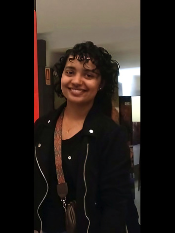

Astrophysicist | PhD Researcher
Sandra Jaison, Rogério Riffel, Dominika Wylezalek
Status: In preparation
Rogério Riffel, et. al. including Sandra Jaison
arXiv linkAvinanda Chakraborty, et. al. including Sandra Jaison
Published in Astronomy & Astrophysics (A&A), 2024 (AA51805-24).
arXiv linkSupervisor: Dr. Rogério Riffel [UFRGS]
Supervisor: Dr. Ravi Joshi [Indian Institute of Astrophysics]
Collected data, classified samples, and analyzed the unique features of AGNs in dwarf galaxies using the CIGALE code to improve AGN identification.
Supervisor: Dr. Avinanda Chakraborty [INAF - Italy]
Processed Level 1 UVIT data from the AstroSat archive using the CCDLAB pipeline. Generated orbit-wise cleaned images, performed aperture photometry, and conducted SED modeling.
Supervisor: Dr. Suchetana Chatterjee [Presidency University]
Constructed SEDs using the X-CIGALE code to study differences between the host galaxy properties of radio-loud and radio-quiet quasars.
Supervisor: Dr. Samir Choudhuri [IIT Madras]
Simulated diffuse foreground using VisCPU and UVSim tools, comparing computational outputs.
I am always open to discussing astrophysics, research collaborations, or data science.
📧 Email: sandra.jaison@ufrgs.br
🔗 GitHub: github.com/SandraJaison77
🔗 LinkedIn: linkedin.com/in/sandra-jaison-0bb58b1b5